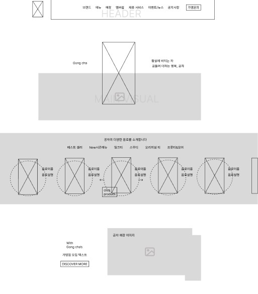
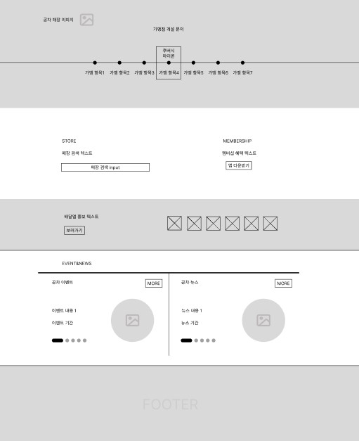

01
PROJECT GOAL
다이슨 홈페이지 리뉴얼의 주요 제작 의도는 시각적 요소와 인터랙션을 통해 사용자 경험을 극대화 하는 것입니다. 현대적이고 세련된 디자인을 채택하여 브랜드의 혁신성과 기술성을 강조하며, 고품질 이미지를 활용해 제품의 디테일과 성능을 효과적으로 전달하고자 했습니다. 또한 직관적이고 쉽게 탐색할 수 있는 인터페이스를 제공하여 방문자가 원하는 정보를 빠르게 찾을수 있는 홈페이지 제작을 목표로 하였습니다.

UI DESIGN PRINCIPLE
:STYLE GUIDE
FONT
모던하고 심플 한 느낌을 전달하는 디자인적 특성이 있어, 다이슨의 혁신적이고 기술 중심적인 브랜드의 이미지와 적합하다고 생각 하였습니다. 애플 폰트는 다양하고 뛰어난 가독성으로 제품 설명과 정보 전달을 쉽게 만들어 주며, 사용자들로 하여금 콘텐츠를 편안하게 읽을수 있게 해 줍니다.
COLOR
그레이 계열의 색은 다이슨의 첨단 기술과 모던한 디자인을 강조하는 동시에 블루와 블랙을 보완하며 조화를 이룹니다. 또한 사용자에게 차분하면서도 전문적인 느낌을 준다고 생각하였습니다. 청결함과 전문성을 강조할 수 있는 블루 계열의 색으로 제품의 성능과 품질을 강조하였습니다.
SUB
APPLE SD Gothic700 APPLE SD Gothic600 APPLE SD Gothic300COLOR
#3874E1
#C6C6C6
#ffffff
#000000
OVERVIEW
다이슨(Dyson)은 영국의 기술 혁신 기업으로, 주로 청소기, 공기청정기, 헤어 드라이어, 무선 청소기 등 다양한 가전제품을 제조하고 있습니다.
다이슨은 기술을 중심으로 한 혁신과 디자인을 결합하여 가전제품 시장에서 독보적인 위치를 차지하고 있으며, 전 세계 소비자들에게 높은 평가를 받고 있습니다.
어떻게 하면 브랜드의 정체성을 시각적으로 더 명확히 전달할 수 있을까?
다이슨은 혁신과 기술, 디자인을 중요시하는 브랜드입니다. 이번 리뉴얼에서는 다이슨의 브랜드 아이덴티티를 강화하기 위해 세련되고 현대적인 디자인을 적용했습니다. 이를 통해 다이슨의 차별화된 기술력과 제품의 혁신성을 시각적으로 강조하고자 합니다.
AS-IS
제품 정보의 제한
상호작용 요소의 부족
비주얼 및 콘텐츠 품질
TO-BE
제품 홍보에 용이한 제품의 기능들을 함꼐 적어주면서 소비자들이 충분한 정보를 얻을 수 있도록 했습니다.
인터렉티브 요소들을 추가하여 소비자들이 보다 적극적으로 제품을 탐색할 수 있도록 했습니다.
고해상도 이미지와 최신 디자인 트렌드를 반영하여 깔끔하고 세련된 비주얼을 구현하였고, 브랜드의 혁신성을 효과적으로 강조했습니다
WIREFRAME
1920px 기준으로 하여 헤더 / 메인 / 컨텐츠 / 푸터 페이지를 구성 후,
UI Wireframe을 제작하였습니다.



시각적으로 명확하게
전달되는 다이슨의
브랜드 아이덴티티


제품의 대표 기술을 함께 적어주어
소비자들이 충분한 정보를 얻음


소비자와 상호작용하는 인터렉티브 요소